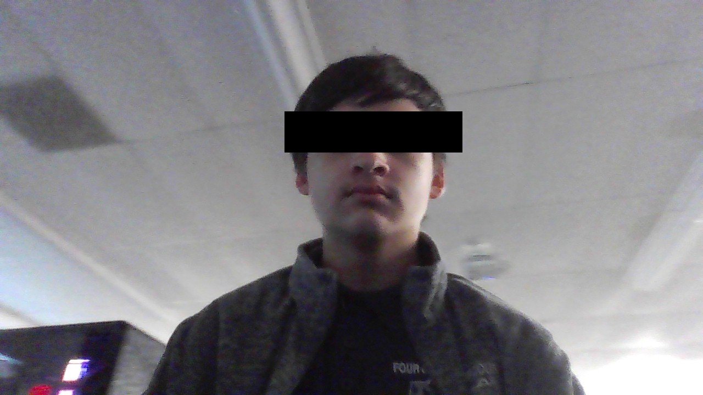

My Name is Dallas
I attend Four County Carrer Center for Computer Programming, My instructor is Mr.Geiger
I have 7 Siblings their names are
[REDACTED] He is 21 Years old
[REDACTED] She is 20 Years old
[REDACTED] He is 17 Years old
[REDACTED] He is 12 Years old
[REDACTED] He is 10 Years old
[REDACTED] She is 6 Months old
My name is Dallas [REDACTED] I am 16 Years old and I attend Four County Carrer Center for Computer Programming. I'm attending this class because ever since I was a kid I had a massive intrest on how computers work. As I got older I relized that I really like Coding. I started With C+ so I could program Arduino Boards. With that knowledge I build Combat Robots for my home school, Patrick Henry. I never placed well but I knew I liked it. I competed in the NRC for the last 3 years, And I competed in BEST robotics for the same 3 years. I used C+ code to help my classmates code the robot, And that really is the event that sparked this intrest. I hope to continue this path in life because it's what I like to do.
I have 2 Pets. A cat Named Nami and A dog named Scout. Nami is a orange Mancoon Mix and Scout is a Pitbull mix, But hes the mutt of the group
I plan to Finish my school years in Four County. After Four County I hope to attend BGSU or Northwest state for my bachelor's degree in Computer Programming. I hope to be able to start my own game design company called Mali Studios. It will be a studio mainly focused on Fist Person games. 3 Years ago I started Watching youtube videos on how to code and I could some what understand it, So Ive been trying to create my own game. That game? Arctic Isolation.
About game
What do I do outside of school? Well.
I play games, hang out with friends, and best of all sleep
What games do I play?
Rust
Minecraft
Phasmophobia
Call Of duty Warzone
Elden Ring
Sea Of Theives
I love computers, like any computer. I love taking things apart to see how they work, then I use my memory to put them back together, I love fixing things, mainly electronics and I love cars. My dream car thats affordable is a 2012 Nissan 370z. Why? I like the way the car looks, and I like the tuning capibilitys of it. I want that car so I can upgrade it to a stage 3 and blow all of my money, (my spending money) on it, Because who needs food. I want to swap the exaust on it, change it to straight cut gears, twin turbo it, and if I have the money add a supercharger and nitros, add a body kit to it, and all that good stuff. My dream car that I need to be rich for is a 2022 Koenigsegg jesko or a Mclaren P1.